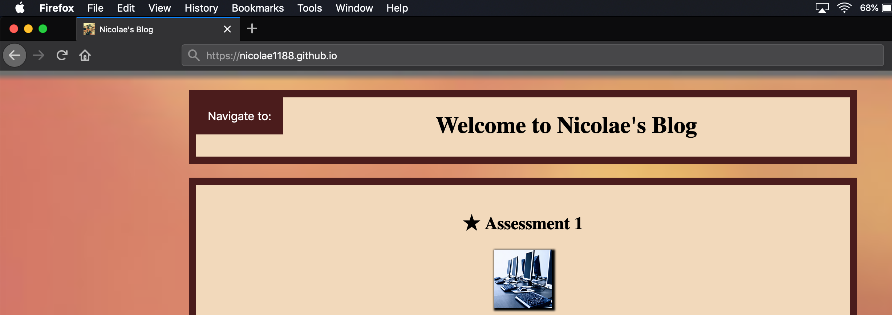
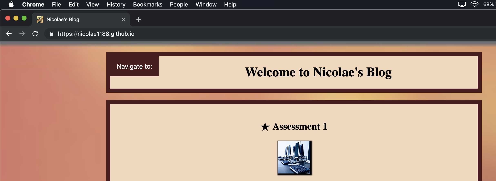

Technology has important effects on business and will keep growing in the future. Technology will improve business’ communication by offering several ways of communicating such as email, instant messaging, video conferencing, business phones.It can increase the efficiency and the capacity of the business, saves time and money and it provides new innovations to protect the assets. Technology is essential to business success.Employees rely on it for day-to-day operations.
In order to render a project successful,it must be planned using the kanban method and tools like Trello to breakdown the project into visual tasks and Slack to ensure communication between members of the team.One of the essential skills for project management is the ability to communicate well-understanding and being understood. Effective communication is important in relation to project team dynamics.
As part of the plan , I have identified the components required to build the website. I’ve created 5 lists in the board (Trello), Assessment 1,Assessment 2, To Do List , Doing and Done. In the Assessment 1 and 2 I’ve added the Assessment requirements.I wanted a name and a good design for my website which I placed as tasks in the To Do List.
Not having a clear picture of what it needs to be done in advance.A leader not providing support or lack of experience.
Schedule risk, the risk that activities will take longer than expected. Slippages in schedule typically increase costs and, also, delay the receipt of project benefits, with a possible loss of competitive advantage.Performance risk, the risk that the project will fail to produce results consistent with project specifications.
Choosing up-to-date hardware with enough resources to carry out the tasks and compatible software with the right features for the job is a big deal. In general people are choosing whatever suits them.For example,a user-friendly or customizable interface helps me setup my work environment based on my preferences and keep things lighter.
Trello is a task management app that gives you a visual overview of what is being worked on and who is working on it. It used the Kanban system, which was developed as a system to keep production levels high and maintain flexibility.Trello is a system of boards, lists and cards which helped me to get from nothing to something.
The feature GitHub Pages on GitHub website is a static site hosting service designed to host your personal, organization, or project pages directly from a GitHub repository.
I’ve used GitHub Pages as host to make my website live.
The General Data Protection Regulation 2016/679 is a regulation in EU law on data protection and privacy for all individuals citizens of the European Union and the European Economic Area.
The regulation has a number of aims all designed to increase and standardise the protection of individuals including:
GDPR will have a huge impact on website design, which will have a ripple effect on how your website integrates with your other digital activity like email marketing, social media, and e-commerce activities.
The thread that ties together all of these recommendations is that under the GDPR, the concept of consent being given freely, specific and informed is being strengthened, with new rules.
The tools were appropriate for the job, Trello helped me have a visual of my ideas for the project and keep them organized through a system of boards , lists and cards.
Visual Studio Code is a very simple IDE with great power under the hood and very friendly interface.
Distractions include the phone, email notifications and having multiple web browsers open on the desktop.
Estimate the time you need to tackle different tasks and set a timer for each of your tasks. When it comes to the time limit, move on to another task first.
You can’t always be working at optimum productivity. Instead, you should shoot for working in short bursts at your most productive times.
[2]
Considering the magnitude of the project I would definitely assemble a team and assign members to specific tasks.Also configure a channel in Slack for the team to be able to collaborate,communicate,etc.
Setting a deadline will force me to find the best and fastest way to complete the tasks.
All the function within a website must be tested to ensure that there are no technical issues and everything works smoothly.
Having a compatibility test is essential as it will check the website for browser compatibility or operating system compatibility.
Testing the performance of the website usually shows the behaviour under different operations.
Testing the security is very important for the web applications relating data protections.There are several things that can be tested like CAPTCHA , SSL ,etc.
[3]
The website has only one page which is split into 4 boxes. Header,located at the top followed by Assessment and About Me.References section is located at the bottom of the page. The website’s title can be found in the Header together with the dropdown menu (Navigate to) which is linked to different parts of the website. The assessment section is divided in two categories , Assessment 1 and 2 which contains all the questions and answers for the assessment,plus images above the two headings. The website features a back to top button that appears once the page is being scrolled down.
The copyright law or any other intellectual property might restrict the content of your website or linked content from another website if there is no right of ownership.
Copyright protection on a website is for the content on that site. The content is "material that is perceptible to the users of a particular website." It includes just about everything from news articles, literature, blogs, music, audio such as a podcast, webinars, games, and video.
[4]
Access to a website for individuals suffering from blindness , low vision ,colour blindness, deafness or other disabilities might not be possible.Although there are solutions to accommodate disabled people access like text-to-speech , zoom feature , speech-to-text.
[5]
An HTML file is a webpage coded in HTML that can be displayed in a web browser. It is used to format text, tables, images, and other content that is displayed on a webpage. HTML files are widely used on the web as most pages within static websites have an ".html" extension.
A CSS file is a cascading style sheet (CSS) file used to format the contents of a webpage. It contains customized, global properties for how to display HTML elements. CSS files can define the size, color, font, line spacing, indentation, borders, and location of HTML elements.
A JS file is a text file containing JavaScript code that is used to execute JavaScript instructions in web pages. It may include functions that open and close windows, validate form fields, enable rollover images, or create drop-down menus.


My names is Nicolae Frunza, I am dedicated ,self-motivated, outgoing and team player. For the past several years I’ve been working in quality assurance, customer service and food manufacturing industry. I am currently focusing on becoming a Full Stack developer.
I have chosen code nation based on it's reputation and other people’s recommandation.I prefer attending to classroom-based courses instead of using an online platform.
The lack of experience using the tools had a big impact on the project as I couldn’t accomplish the exact vision of the website. Despite everything I was able to build the website carrying out a large amount of tasks in a very little time as the tools allowed me to be productive and effective.
The project grew bigger and bigger and I had to keep it simple giving up on some ideas. Thus ,having a team is essential for the project.
Overall the tools are powerful , user-friendly ,free to use and customizable to provide best experience. If I would have had a team for the project it would have been delivered according to the initial vision.
The website’s content should be divided on multiple pages instead of having a long long scroll down, so for this matter
a drop-down menu at the top and back to top button at the bottom was introduced to ease the navigation through the content.
© 2019 Nicolae Frunza